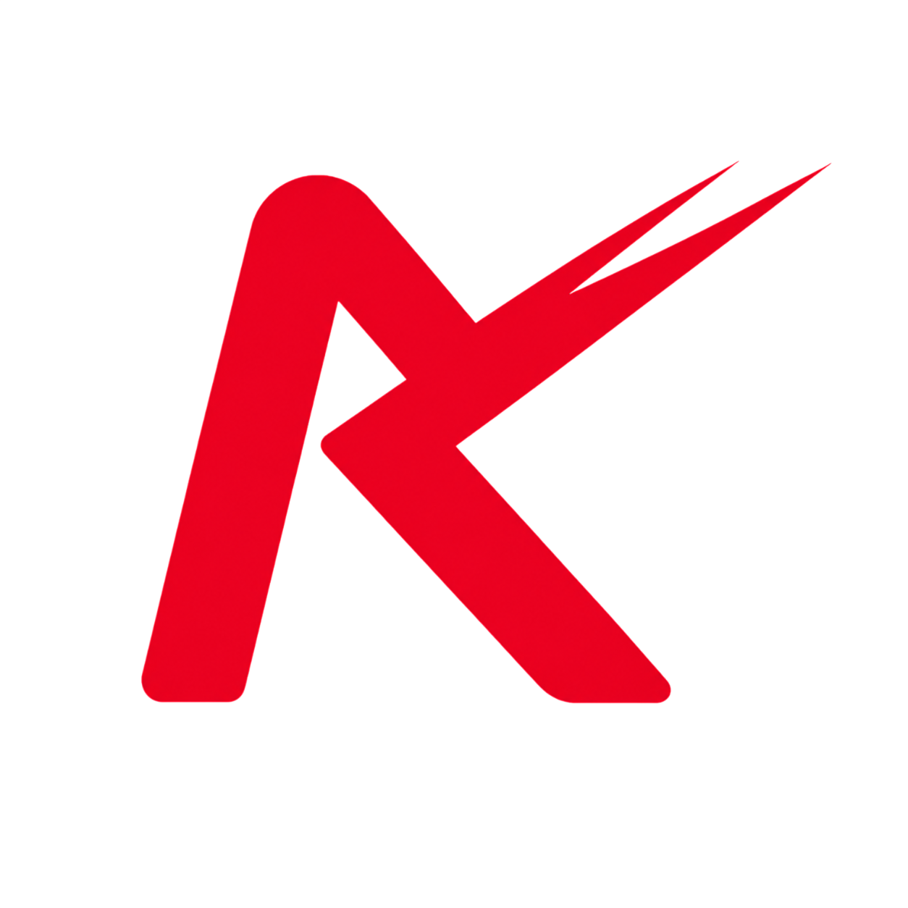

JULY 7, 2026
IT STARTED WITH AN IDEA.
REDLINE was founded on July 7th, 2026 by Itz_rymo, Alexa, and thtgsxrtho.
The idea was simple — create something that Dickson, Tennessee could call its own.
REDLINE was created to give the local car, motorcycle, and truck community a place to meet, connect, and enjoy the culture in a legal and respectful environment.
What started as a small idea quickly became something much bigger.